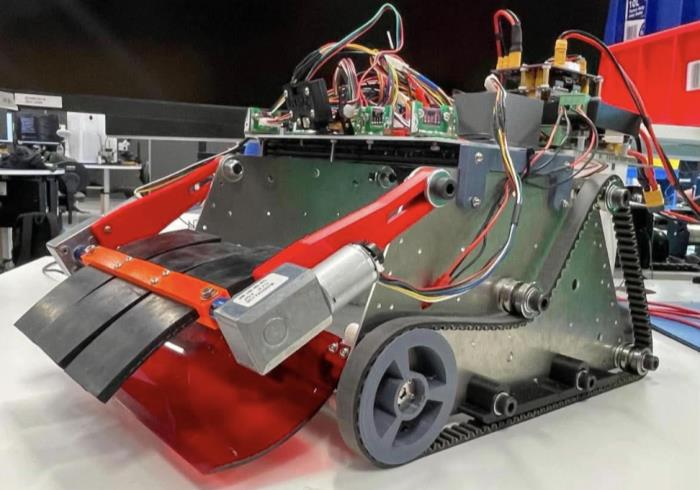
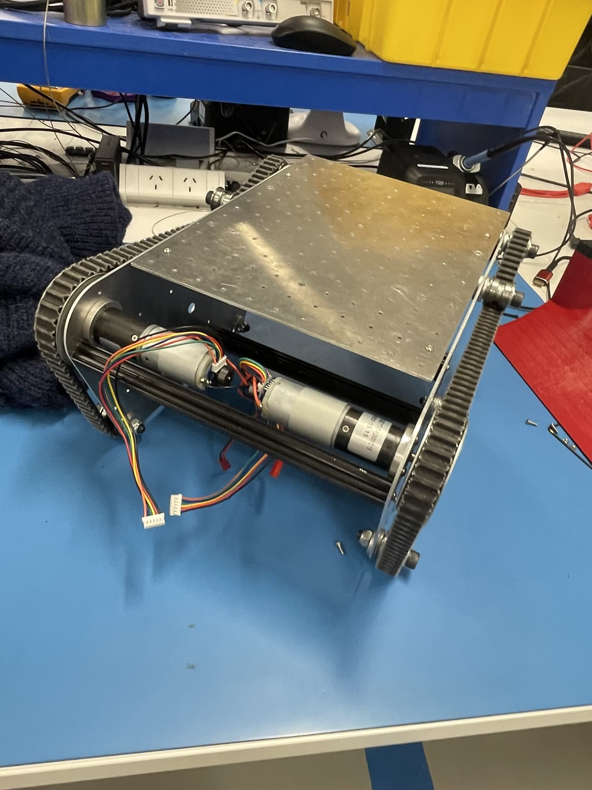
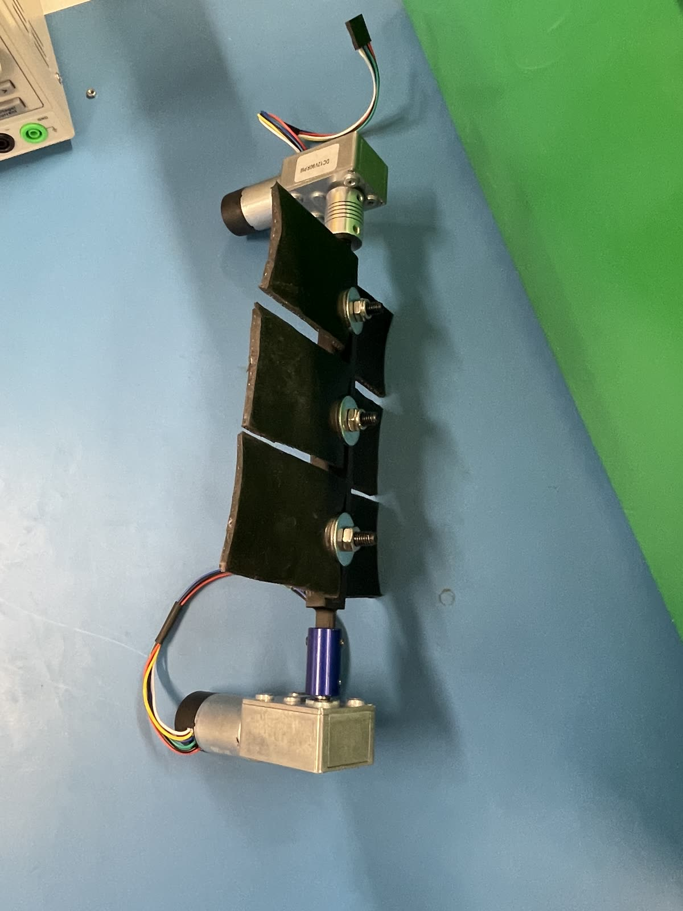
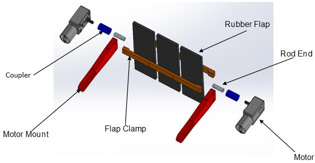
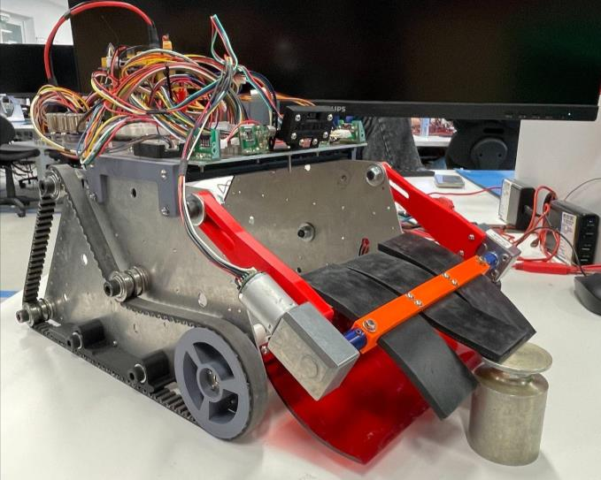
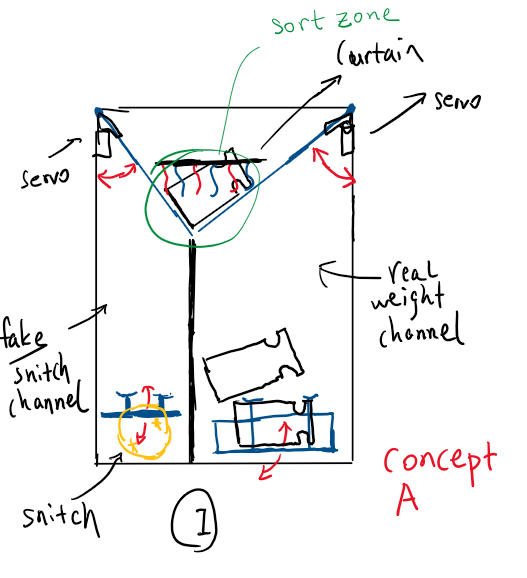

Robotics / Mechanical design
RoboCup Collection Robot
A collection robot our team, Backyard Mechanics, is building for RoboCup. It drives up to weights on the floor and a rotating drum sweeps them up a ramp and into the robot. I proposed the drum intake the team chose, set out the general arrangement, and built a rough proof of concept before we committed to it.
- My part
- The drum intake: concept, prototype, two build iterations and testing
- Chosen by
- The team's weighted decision matrix, 4.77 against 4.00 and 3.71
- Status
- In progress. Sorting, storage and return-to-base still to build and test

01
Concept and architecture
- Proposed the drum: it spins, and the flaps sweep each weight off the floor and up a fixed ramp into the robot. Strongest on throughput and traversal in the team's matrix.
- Kept it deliberately simple, with few moving parts and easy to build and maintain.
- Using the given competition kit for the major parts and proving every system on that chassis first. The drum intake, sorting mechanism and drive wheels are ours.



02
Proof of concept
- Sourced hardware-store parts, 3D printed the drum and flaps, and assembled a rough proof of concept in an afternoon.
- A combine-harvester style intake had been done before, but not the rubber-flap version. Teammates were leaning towards an electromagnet intake, so proving the flap drum worked settled the direction.


03
Build
- Refined the drum through two iterations: six pinned flaps became three centrally clamped flaps to stop them working loose, and the drive motor was swapped for a lower-speed, higher-torque unit after the original stalled under load.
- Ran a Fault Tree Analysis that shaped two design decisions: stiffened flaps against over-deflection, and the motor change.
- Sorting, storage and return-to-base logic still to be built and tested; on track for final assessment.
Structured testing found the next fix early: stiffen the flaps to stop over-deflection under the heaviest load, avoiding time-consuming guesswork.



Learned
- A rough prototype settles an argument faster than talking does. Two of us wanted different intakes, and building the simplest version that could prove or kill the idea was quicker than debating it.
- The proof of concept was scrap-bin parts and basic geometry, but it answered the one thing that mattered, could the drum lift a weight up the ramp, before anyone spent time making it neat.